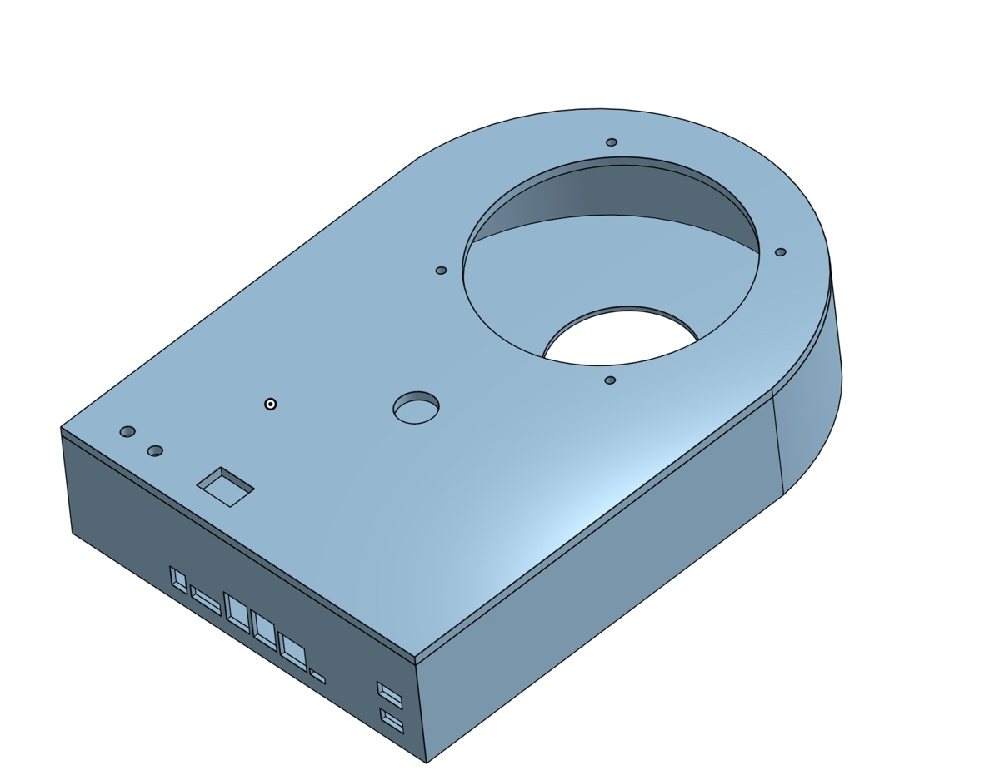
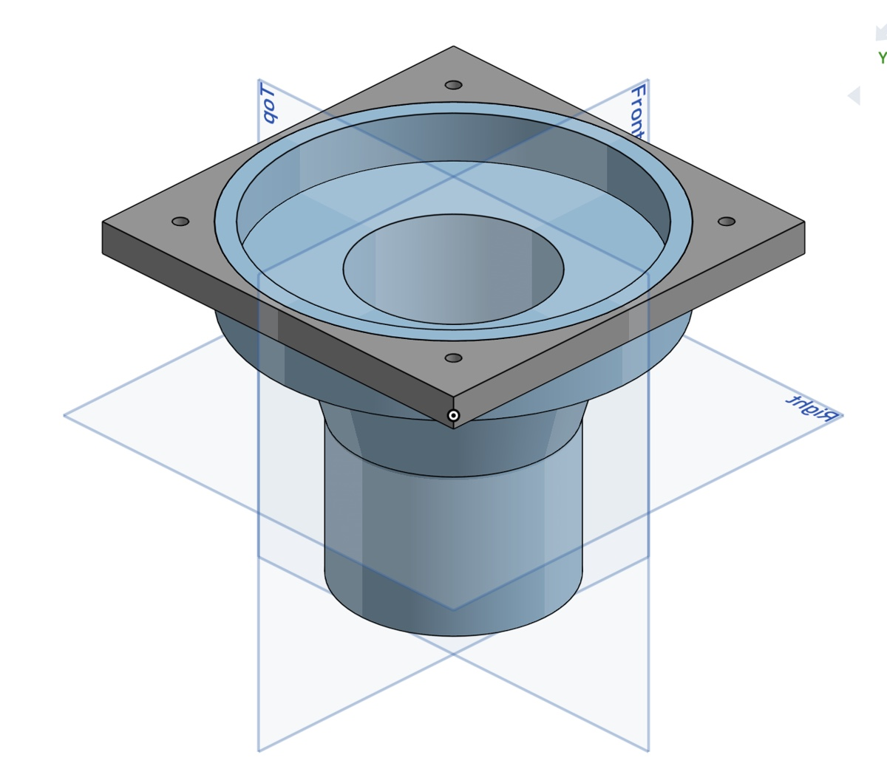
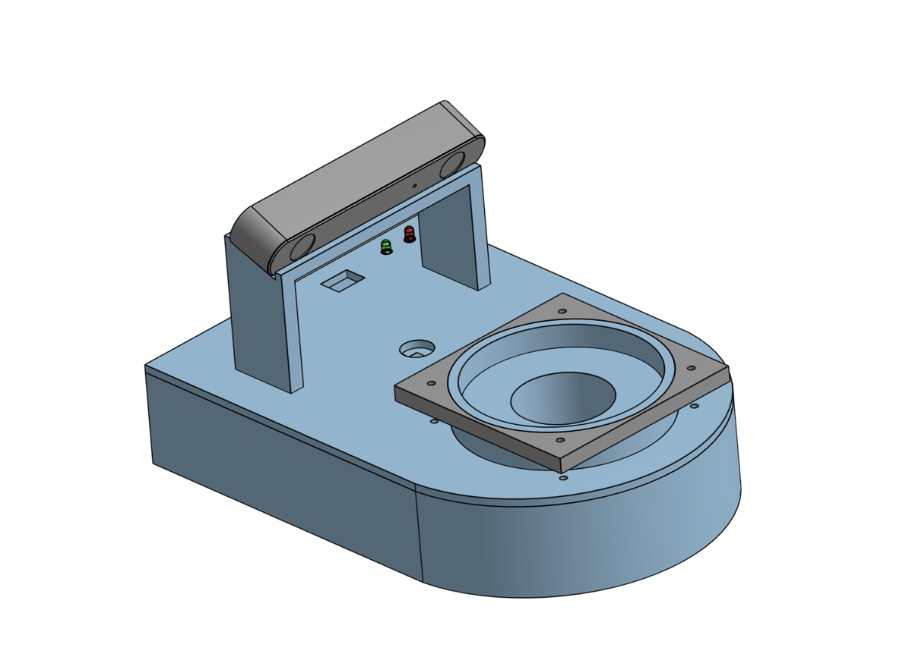

Overview
We wanted a hands-free cleaner: put it on the desk, start it without touching it, and come back to a clean table.
A ZED 2i stereo camera and an NVIDIA Jetson Orin Nano Super handle vision and navigation through ROS 2, while a microcontroller handles the motors. It vacuums up small debris such as rice grains and never drives off the edge.
I built the body and the vacuum
CAD housing. I designed the 3D-printed PLA enclosure as two compartments. One half holds the Jetson, Arduino, motor driver and battery; the other is the debris chamber. It has cutouts for the camera, LEDs, fan, power switch, Jetson I/O and charging access, and every part (body, lid, fan, funnel, camera holder) can be removed and replaced.
Vacuum system. I built the suction path around a top-mounted Noctua PC fan. A funnel-shaped intake concentrates the airflow into a small pickup area and feeds a separate collection chamber, and a mesh filter keeps debris away from the fan. Sealing the vacuum off from the electronics also made the suction stronger, and the funnel lifts out so the chamber can be emptied.
Assembly. I put the robot together: the four geared DC motors and wheels screwed directly onto the body, the fan and funnel, the camera holder, and the electronics and battery inside the housing.



It starts, finds the edge, and sweeps in lanes
- Start. Flip the rocker switch and wave a hand in front of the camera. ROS 2 brings up the camera, motor and edge-detection nodes, and the vacuum fan turns on.
- See the edge. The Jetson uses depth from the stereo camera to find where the table ends, so the robot never drives off it.
- Sweep the desk. An edge-reactive state machine drives forward until it sees an edge, turns 90°, steps sideways, turns 90° again, and repeats, covering the table in back-and-forth lanes.
- Hold speed. Under every move, the ESP32 runs a PID loop on each wheel, using encoder feedback to keep the commanded speed despite desk friction or battery voltage drop.
- Finish. When it meets an edge during a sideways step, it has reached the far side. It turns the vacuum off and lights the completion LED.
We chose vision over simple sensors
| Function | Chosen | Alternatives |
|---|---|---|
| Start signal | Hand gesture to the camera | Sound sensor, motion sensor |
| Edge detection | Stereo depth vision | Infrared sensors, light sensor |
| Pick up debris | Fan-driven vacuum | Sweeper or broom, adhesive |
| Store debris | Separate chamber in the housing | Open internal section, external container |
| Done signal | LED | Buzzer, LCD screen |
Computer vision cost more than simple sensors, but it handles edge detection and also makes it possible to find debris later.
Under the hood
- Housing. A two-part box with a 3D-printed PLA body and a laser-cut wood top plate in the final build. A mesh filter splits the electronics half from the debris half, the fan sits on top, the LEDs above it, and the rear face carries the Jetson's I/O cutouts.
- Vacuum. A Noctua NF-F12 iPPC-3000 PWM fan above a funnel intake, adapted from a computer-fan-and-bottle vacuum. The funnel concentrates airflow at the pickup point and doubles as the collection chamber.
- Drive. Four JGA25-371 geared DC motors with encoders, replacing the prototype's Gikfun hobby motors, which were less durable and less precise in turns.
- Power. An 11.1 V 3S 5200 mAh LiPo with a buck converter for the 5 V logic rail and a 3-way rocker switch. The system draws about 2310 mA, giving roughly 2.3 hours of runtime.
- Control. The Jetson sends wheel speed targets to the ESP32 over USB-C. The ESP32 runs the PID loop through a 2×15 A H-bridge driver, and an Arduino Leonardo drives the fan with PWM and switches the red and green status LEDs.
- Serviceability. Every part can be removed and replaced, and the battery leads are easy to reach for charging.
It cleaned the desk without falling off
The Deskinator cleaned the desk autonomously, never drove off an edge, and finished its cycles within the time limit. Debris inside its intake path was fully picked up in one pass.
| Objective | Target | Result |
|---|---|---|
| Speed | at least 0.25 ft/s | 0.4 ft/s |
| Battery life | at least 15 min | about 2.3 h (from the power budget) |
| Autonomy | no help during a cycle | met, with edge avoidance throughout |
| Rice pickup | 3 cm pickup radius | 1.43 cm average; no grains left in that path |
| Easy to clean | separate debris chamber | met; the funnel lifts out to empty |
Slower cleaned better. The geared motors cut top speed, but tests at 50%, 100%, 150% and 200% speed showed that running below 100% picked up more debris.
Limitations. Debris outside the narrow intake was missed, motor alignment and desk friction sometimes made motion less consistent, and the cluster-planning mode wasn't finished in time.
Next: clean only where it's dirty
We designed, but didn't build, a cluster-planning mode. The camera finds the rice, the robot plans the shortest tour through the clusters (a small Traveling Salesman problem, solved with A* and a minimum-spanning-tree heuristic), and it vacuums only where there's debris. It would reuse the same Nav2 and ESP32 PID layers, so only the planning layer changes.
What I learned
- Iterate early. Repeated prototyping and testing exposed airflow, motor and navigation problems that weren't obvious on paper.
- Small geometry changes matter. Changes to the funnel shape and internal layout had a big effect on suction.
- Simple can be more reliable. The edge-reactive navigation worked better in practice than the more complex planner.
Project details
- Team. Amira Sagitkhan, Angie Chang, Aakash Kumar, Riasat Audhy (Team A1, Section 2A)
- Course. EK210 Introduction to Design, Boston University, spring 2026
- Parts cost. $1,191.89, including the $499 ZED 2i camera and $249 Jetson